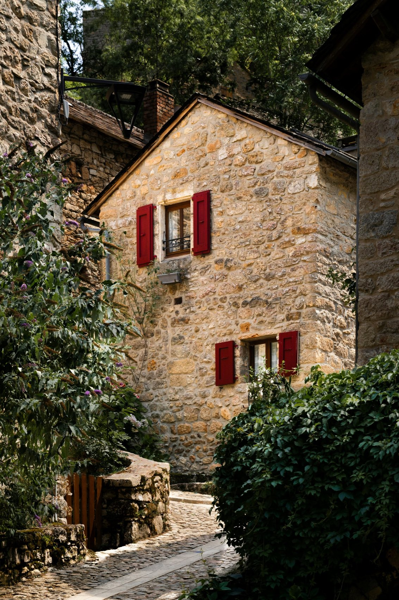
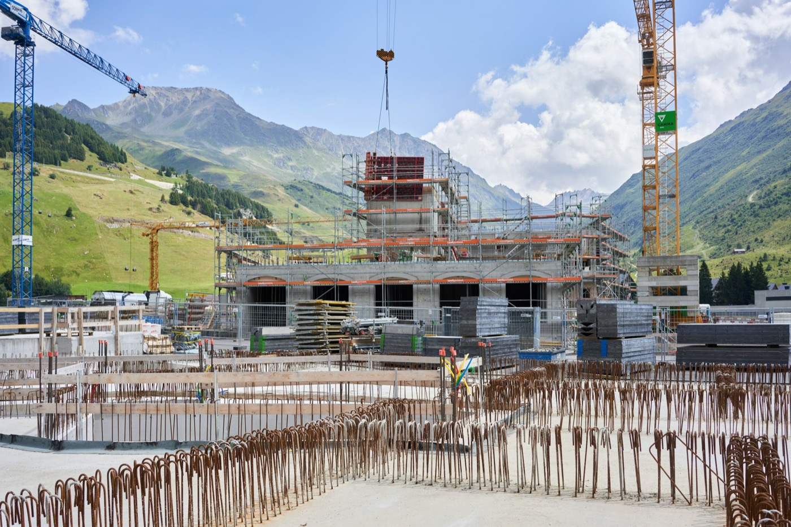
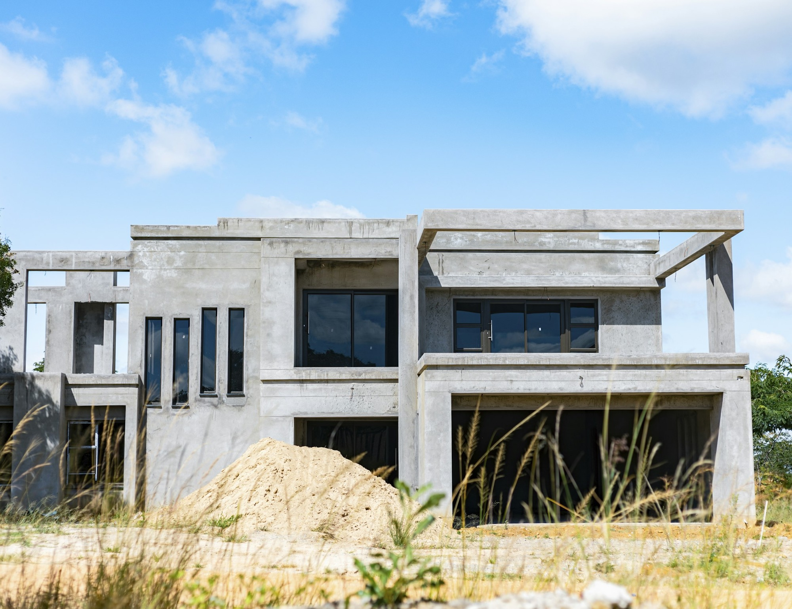
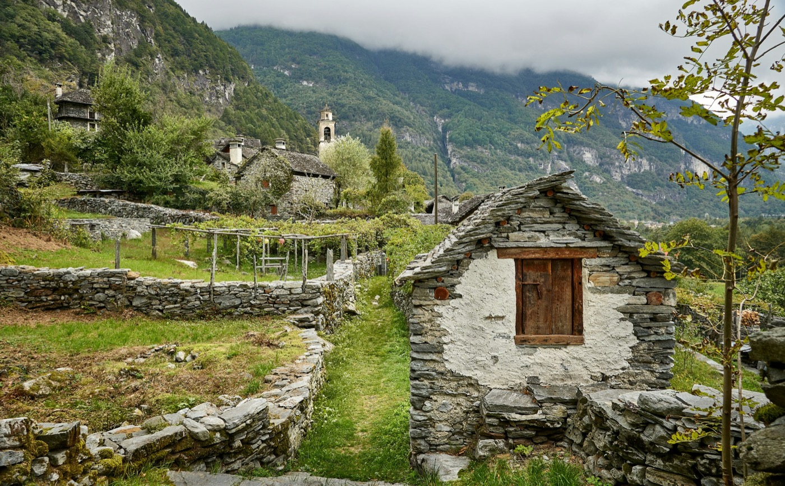
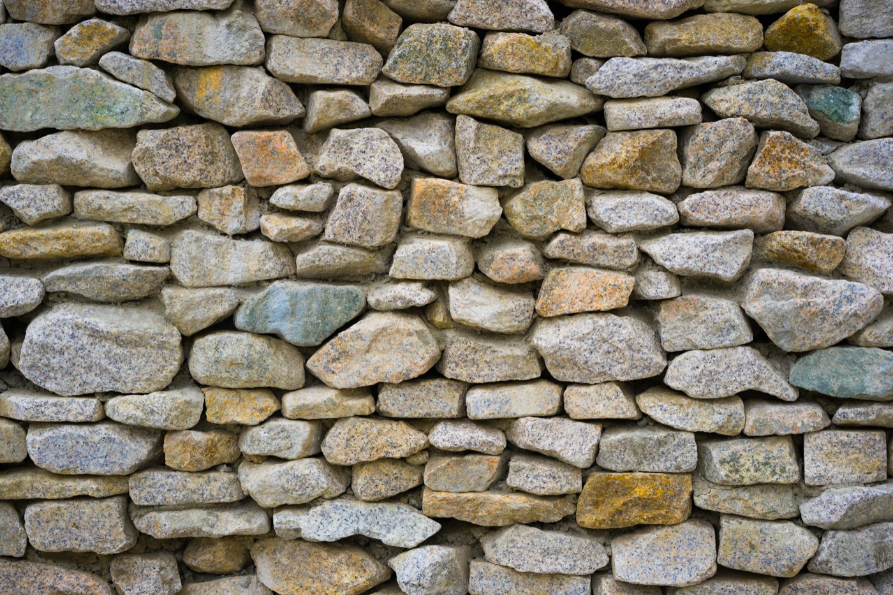
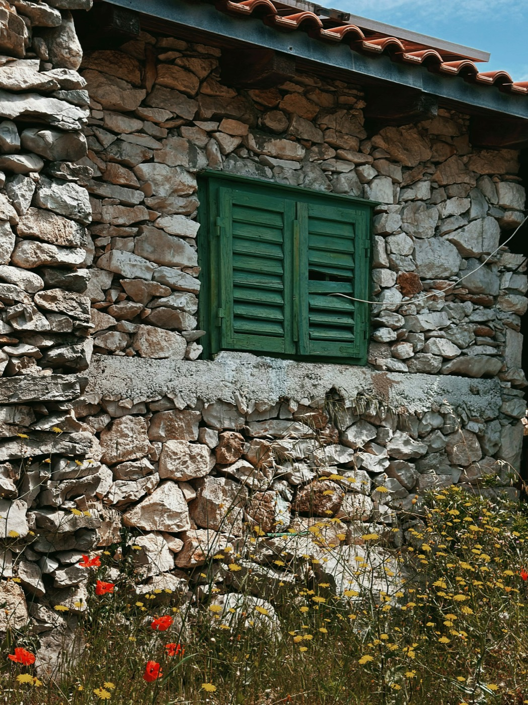
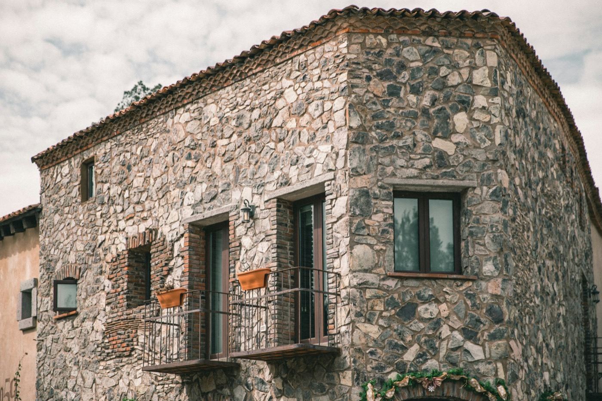
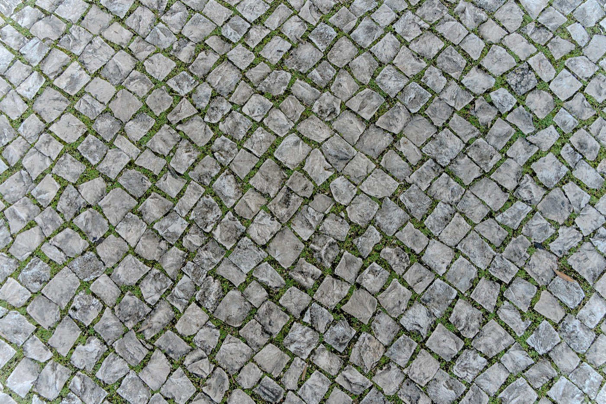

Davesco-Soragno, Lugano · dal 1964
Costruiamo nel Luganese da tre generazioni.
Impresa generale di costruzioni. Lavori di capomastro, case moderne e palazzine, ristrutturazioni di case e rustici, muri e pavimentazioni in sasso.

01 · Cosa facciamo
Dal muro in sasso alla palazzina.
La base è il lavoro di capomastro. Intorno, tutto quello che serve per costruire, rinnovare e consegnare un edificio finito.
-
01
Lavori di capomastro
Fondazioni, strutture in calcestruzzo armato, murature. Sopra e sotto terra.

-
02
Case moderne e palazzine
Nuove costruzioni residenziali, dalla casa unifamiliare alla palazzina.

-
03
Ristrutturazioni di case e rustici
Manutenzione, risanamento e trasformazione, anche su edifici in pietra.

-
04
Muri e pavimentazioni in sasso
Opere tradizionali eseguite a mano, come si facevano una volta.

-
05
Facciate rustiche e finiture di pregio
Facciate in pietra a vista e finiture curate nei dettagli.

-
06
Impresa generale, chiavi in mano
Con artigiani di fiducia consegniamo l'immobile finito, con un solo interlocutore.

02 · Dalla fondazione al tetto
Ogni piano, la stessa squadra.
Lo scavo, le fondazioni, i solai, le murature, il tetto. Ghirlanda segue l'edificio dalla prima pietra alla consegna.
- 01 Scavo e fondazioni
- 02 Piano terra e murature
- 03 Solaio in calcestruzzo armato
- 04 Piano superiore e serramenti
- 05 Tetto e copertura
Un solo interlocutore, dal primo scavo alla consegna chiavi in mano.
03 · La famiglia
Un nome, tre generazioni.
Ghirlanda nasce nel 1964 a Sonvico, come impresa di costruzioni e studio tecnico. Da allora passa di padre in figlio: oggi la squadra conta circa 30 persone e lavora soprattutto per privati, senza rinunciare ai lavori pubblici quando se ne presenta l'occasione.
La cura artigianale di una volta e la precisione tecnica di oggi, nella stessa impresa.
- 1964
Viteo Ghirlanda
Fonda l'impresa e la fa crescere cantiere dopo cantiere.
- 1970
Battista Ghirlanda
Cresciuto in impresa, si laurea in architettura e consolida l'attività.
- Oggi
Denis Ghirlanda
Ingegnere civile, guida la terza generazione con la madre al suo fianco.
04 · Come si lavora
Chiaro dall'inizio.
Piccolo intervento o nuova costruzione, il percorso è lo stesso.
- 01
Primo contatto
Una telefonata o una email: ci raccontate il lavoro.
- 02
Sopralluogo
Vediamo il posto, misuriamo, chiariamo cosa serve.
- 03
Preventivo
Un'offerta scritta, voce per voce.
- 04
Cantiere
La nostra squadra in cantiere, un referente per ogni domanda.
- 05
Consegna
L'opera finita, anche chiavi in mano.
05 · Cantieri
Sasso, calcestruzzo, rustici.
Foto indicative. Qui vanno le foto dei vostri cantieri.

06 · Contatto
Raccontateci il lavoro.
Per un sopralluogo o un preventivo gratuito basta una telefonata o due righe qui accanto.
091 943 25 61 ghirla@bluewin.ch Ghirlanda SAStrada Ponte di Valle 10a
6964 Davesco-Soragno (Lugano) Strada Ponte di Valle 10a
Apri in Google Maps
Anche su WhatsApp (linea fissa).